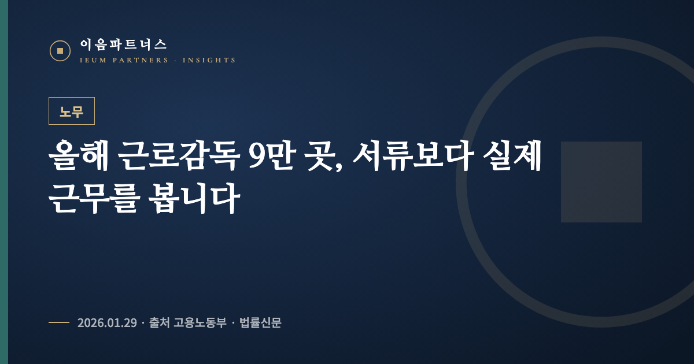

올해 근로감독 9만 곳, 서류보다 실제 근무를 봅니다

근로감독은 한때 일부 업종이나 문제가 생긴 사업장의 일로 여겨졌습니다. 그런데 고용노동부가 2026년 감독 대상을 9만 곳으로 크게 늘리고 감독 방식도 바꾸면서, 대부분의 회사가 언제든 감독을 받을 수 있다고 보고 대비해야 하는 상황이 됐습니다. 이 글에서는 2026년 감독 계획의 핵심과 우리 회사가 먼저 점검할 것을 정리합니다.
특히 서류만 갖춰 두면 된다는 생각은 이제 통하기 어렵습니다. 근로계약서와 실제 근무가 맞는지 한 번 점검해 보고 싶다면 카카오톡 채널 이음파트너스로 편하게 물어보셔도 됩니다.
무엇이 바뀌었나
고용노동부는 2026년 1월 14일 근로감독 행정 혁신 방안을, 1월 22일 2026년 사업장 감독계획을 발표했습니다. 감독 물량과 인력을 늘리는 것뿐 아니라 감독 방식 자체를 바꾸는 것이 핵심입니다(고용노동부 보도자료).
| 구분 | 내용 |
|---|---|
| 감독 물량 | 2025년 5.2만 곳 → 2026년 9만 곳(노동 4만, 산업안전 5만) → 2027년 14만 곳(전체 사업장의 약 7%) |
| 신고 경로 | 재직자 익명 신고센터 상시 운영, 익명 제보 사업장 감독의 법 위반율 85.8%(일반 감독 57%) |
| 제재 원칙 | 상습·악의적 위반과 안전보건조치 위반은 시정지시 없이 즉시 제재 |
| 감독 인력 | 2026년까지 근로감독관 2천 명 증원, 산업안전 감독관 895명 → 2,095명 |
어떤 회사가 집중적으로 감독받나
노동 분야에서는 임금체불, 공짜·장시간 노동, 취약계층 보호가 중심입니다. 1년간 2회 이상 체불 신고가 들어온 사업장은 전수조사 감독을 받고, 포괄임금 오남용과 교대제·특별연장근로 반복 사업장도 점검합니다. 직장 내 괴롭힘 신고가 많은 곳, 최근 급성장한 기업, 가짜 3.3 위장 고용(실제로는 직원인데 사업소득세 3.3%를 떼는 프리랜서로 계약하는 것)과 사업장 쪼개기도 대상입니다(고용노동부 보도자료).
30인 미만 사업장은 법적 근거가 마련되면 지방정부도 감독할 수 있게 하고, 건설·외국인 등 취약 분야는 관계 부처와 합동 감독을 추진합니다(고용노동부 보도자료). 그동안 감독을 받을 일이 드물었던 작은 회사도 예외가 아니라는 뜻입니다.
서류만 보지 않는다는 뜻은
법률신문에 실린 법무법인 분석은 익명 설문조사와 근로자 면담 같은 실질 조사가 도입돼 “서류상 문제가 없더라도 실제 근무 실태가 법령에 부합하지 않는 경우” 적발 가능성이 크게 높아질 것으로 내다봤습니다(법률신문). 계약서에 적힌 근로시간과 실제 근무가 다르거나, 프리랜서 계약인데 실제로는 출퇴근 관리와 업무 지시를 받고 있다면 이런 과정에서 드러날 수 있습니다.
대표님이 지금 확인할 것
- 근로계약서의 근로시간·임금과 실제 출퇴근 기록, 급여명세서가 서로 맞는지
- 포괄임금이나 고정 수당으로 연장근로를 처리하고 있다면 실제 시간 기준으로 다시 계산해 보기
- 프리랜서·외주 인력이 실제로는 출퇴근 관리와 업무 지시를 받고 있지 않은지
- 퇴사자 금품을 14일 안에 정산하는지, 위험성평가를 실제로 하고 기록하는지
참고한 자료
- 현장 밀착형 「2026년 사업장 감독계획」 발표 — 고용노동부 (2026.01.22)
- 「근로감독 행정 혁신」으로 모두가 행복하게 일할 수 있는 나라를 만들겠습니다 — 고용노동부 (2026.01.14)
- 2026년 근로감독 강화에 따른 기업 리스크 분석 및 대응 방향 — 법률신문 (2026.01.29)
감독은 미리 준비한 회사와 그렇지 않은 회사의 차이가 크게 드러나는 일입니다. 계약서와 실제 근무가 맞는지 점검하고 싶다면 카카오톡 채널 이음파트너스로 문의해 주세요.
※ 이 글은 일반적인 정보 제공을 위한 것으로, 개별 사안은 세무사·노무사 등 전문가와 함께 확인하시기 바랍니다.